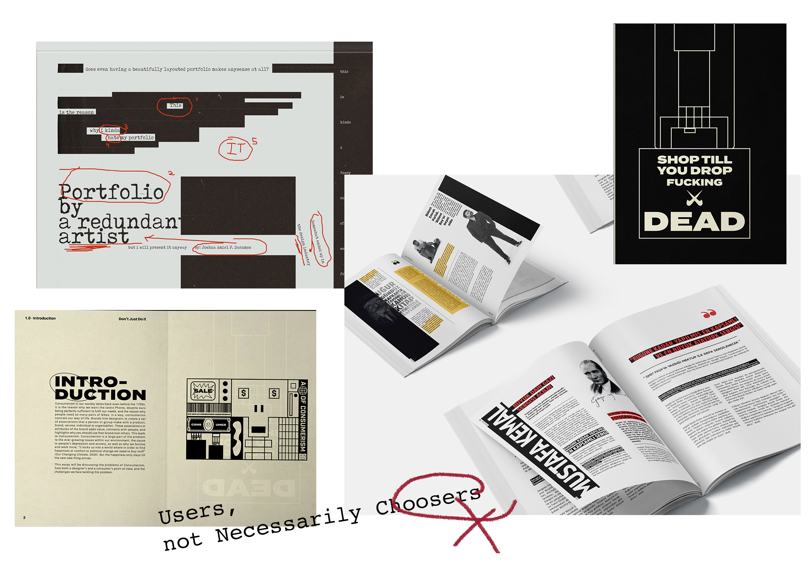
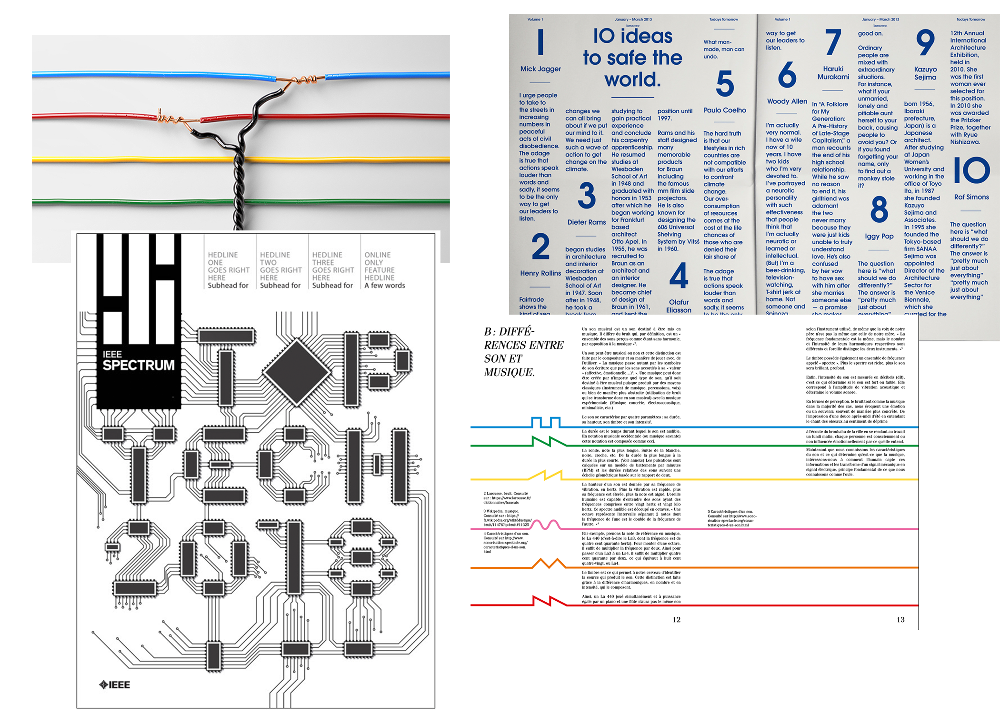
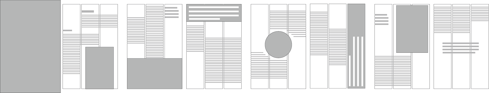
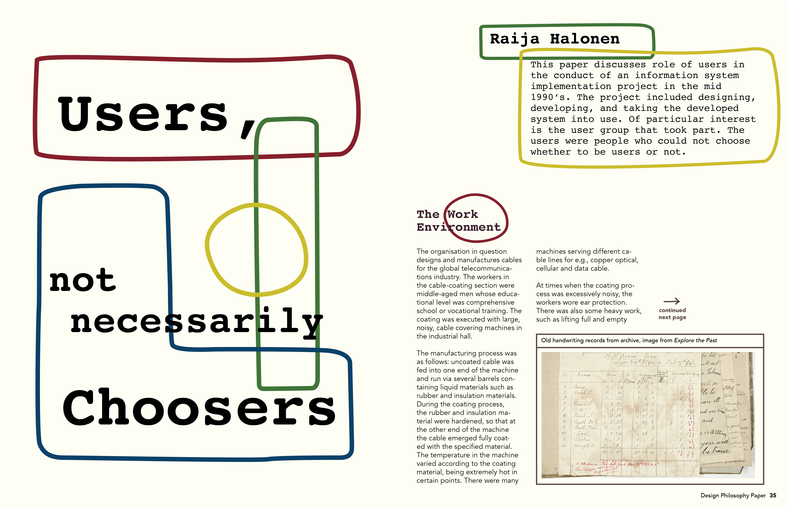
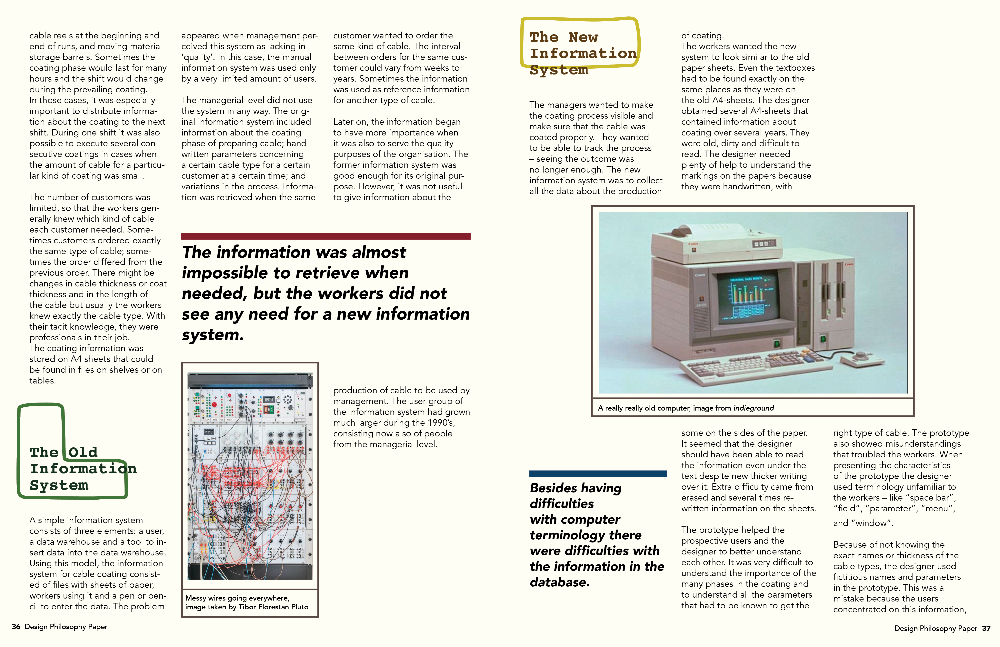
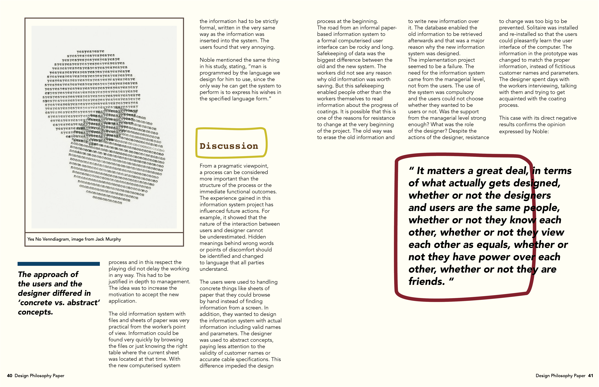

Users, Not Necessarily Choosers
Brief
Goal
The original article was a research paper published on Design Philosophy. The goal of the design was to reduce the "academic sense" of the paper and redesign it so that readers could have an reading experience similar to reading magazines - chill, and understandable.
Category
Editorial Design
Tool
Illustrator, InDesign
Content Insight
Big Idea
Users, Not Necessarily Choosers is a design research paper discussing a project of how the designer failed to design a new computer-based information system to replace the old handwriting information system the cable workers were used to. The paper emphasizes the mutual understanding barrier between the workers (users) and the designer and discusses the reasons behind.
"It matters a great deal, in terms of what actually gets designed, whether or not the designers and users are the same people, whether or not they know each other, whether or not they view each other as equals, whether or not they have power over each other, whether or not they are friends."
Keywords
- Computerisation
- Handwriting
- Industry Unemployment
- Cable Coating
- Information System
- Communication Gap
- Thinking in Different Positions
Stylistic Choice
Moodboard
 More Ideas
- Color Palette: Red & Yellow & Blue & Green (common cable colors)
- Emphasize the comparison between handwriting and typing
- Use yellowish paper color as background to echo the handwriting style of the workers
- Serif font (represents old-day handwriting) vs. sans-serif font (represents modern tech)
- Hand-writing styled markers as decorative elements
Content Structuring
Text Elements Anatomy
- Headline
- Essay Abstract
- By-line
- Body Text
- Pull Quotes
- Caption
- Sidebar
- Folio
Layout Draft
Design Outcome


